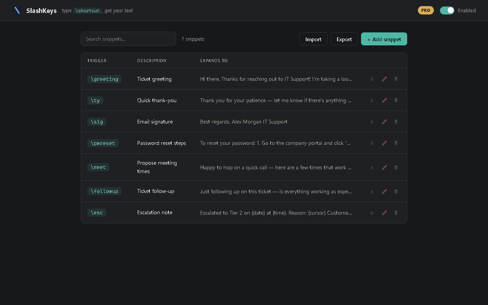

\
SlashKeysType \shortcut.
Get your full text.
A free, private text expander for your browser — the successor to the retired ShortKeys app. Your snippets never leave your device.
Free · No account · No cloud · Source on GitHub
\greeting →
Hi there,
Thanks for reaching out! I'd be happy to help you with this.
Best regards,
Thanks for reaching out! I'd be happy to help you with this.
Best regards,
Why SlashKeys
Private by design
Snippets live in your browser's local storage. No server, no account, no analytics. Nothing you type is ever transmitted.
Works where you type
Gmail, Outlook web, LinkedIn, helpdesk tools, CRMs, forums — plain fields and rich editors alike. Password fields are always ignored.
The classic \trigger
The same backslash syntax ShortKeys users trusted for two decades. Instant, inline, no popup menus to click through.
Honestly free
20 snippets with full expansion features, forever. Pro is a one-time $9.99 — unlimited snippets, placeholders, import/export. No subscription.

Switching from ShortKeys?
ShortKeys has been retired — its website is gone and there will be no more updates.
SlashKeys was built as its successor for the browser: the same
\trigger workflow,
rebuilt on modern extension APIs. Export your old macros as tab-delimited text and import them
in one click (Pro) — every trigger and replacement comes with you.
FAQ
- Is it really free?
- Yes — 20 snippets with every expansion feature, forever. Pro is a one-time purchase (not a subscription) that unlocks unlimited snippets, dynamic placeholders like
{date}and{cursor}, import/export, and four extra themes. - Where is my data stored?
- In your browser's local extension storage, on your machine. Read the privacy policy — the short version: we never see anything.
- Does it work outside the browser?
- No — SlashKeys expands text on web pages only. That's the deal: browser-deep, privacy-first.
- Google Docs?
- Not yet — Docs uses a canvas-based editor rather than normal text fields. It's on the roadmap.